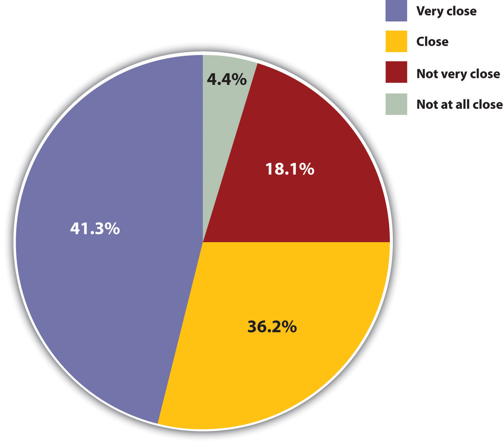
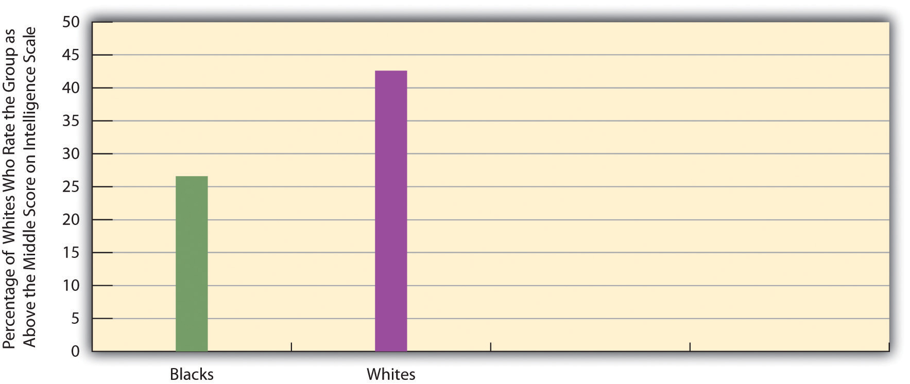
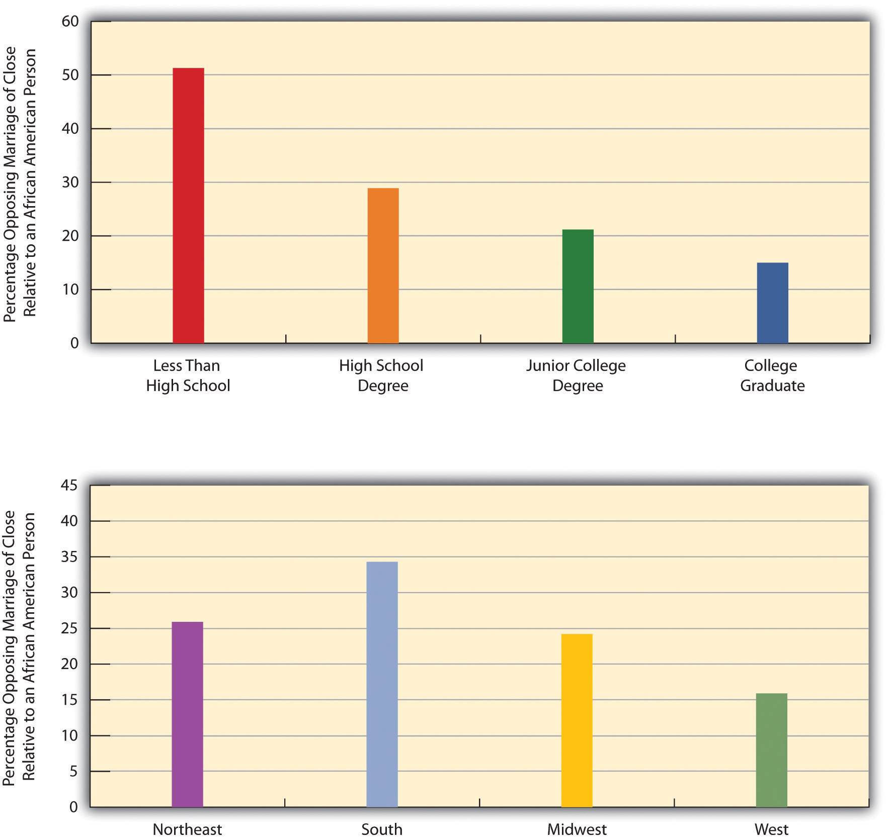
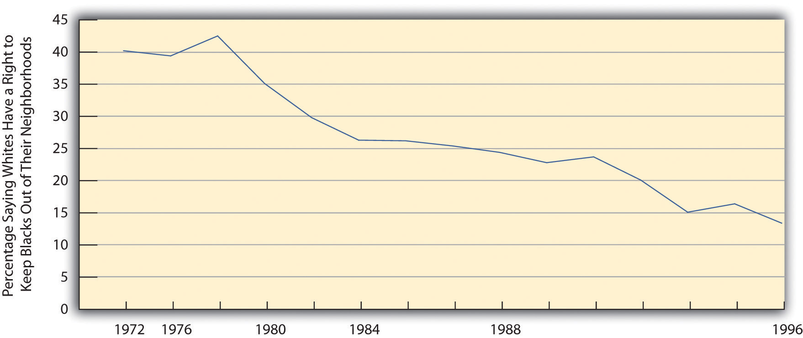
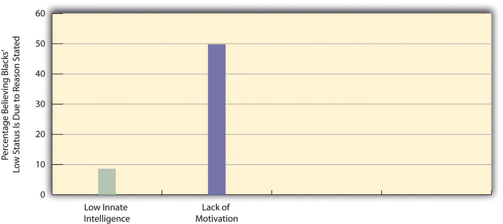
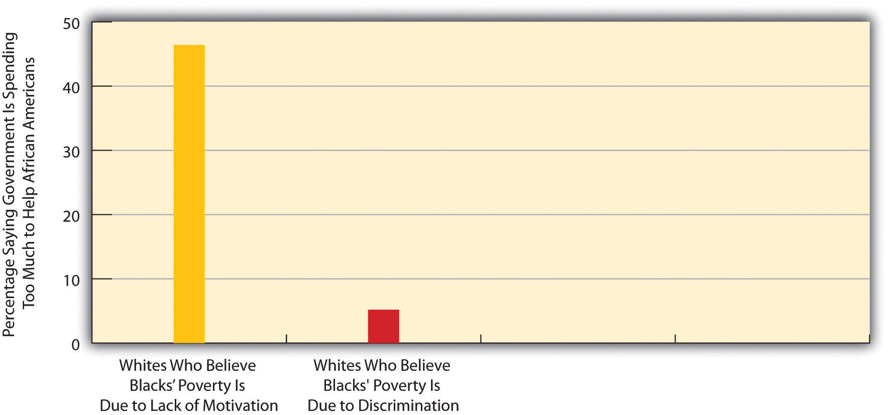
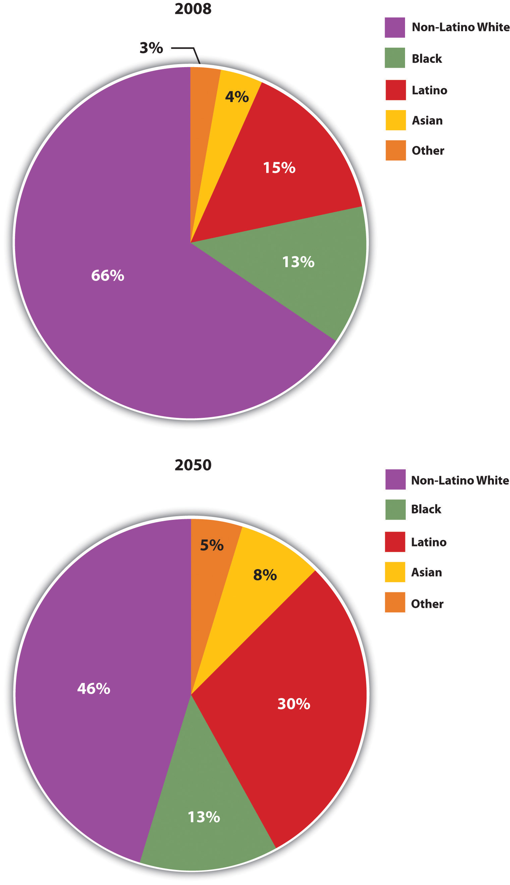

“White Supremacist Held Without Bond in Tuesday’s Attack,” the headline said. James Privott, a 76-year-old African American, had just finished fishing in a Baltimore city park when he was attacked by several white men. They knocked him to the ground, punched him in the face, and hit him with a baseball bat. Privott lost two teeth and had an eye socket fractured in the assault. One of his assailants was arrested soon afterwards and told police the attack “wouldn’t have happened if he was a white man.” The suspect was a member of a white supremacist group, had a tattoo of Hitler on his stomach, and used “Hitler” as his nickname. At a press conference attended by civil rights and religious leaders, the Baltimore mayor denounced the hate crime. “We all have to speak out and speak up and say this is not acceptable in our communities,” she said. “We must stand together in opposing this kind of act.” (Fenton, 2009, p. 11)Fenton, J. (2009, August 20). Details emerge on suspect: White supremacist held without bail in Tuesday’s attack at Fort Armistead Park. The Baltimore Sun. Retrieved from http://www.baltimoresun.com/news/maryland/baltimore-city/bal-md.ci.lockner20aug20,20,1843383.story
In 1959, John Howard Griffin, a white writer, changed his race. Griffin decided that he could not begin to understand the discrimination and prejudice that African Americans face every day unless he experienced these problems himself. So he went to a dermatologist in New Orleans and obtained a prescription for an oral medication to darken his skin. The dermatologist also told him to lie under a sunlamp several hours a day and to use a skin-staining pigment to darken any light spots that remained.
Griffin stayed inside, followed the doctor’s instructions, and shaved his head to remove his straight hair. About a week later he looked, for all intents and purposes, like an African American. Then he went out in public and passed as black.
New Orleans was a segregated city in those days, and Griffin immediately found he could no longer do the same things he did when he was white. He could no longer drink at the same water fountains, use the same public restrooms, or eat at the same restaurants. When he went to look at a menu displayed in the window of a fancy restaurant, he later wrote,
I read, realizing that a few days earlier I could have gone in and ordered anything on the menu. But now, though I was the same person with the same appetite, no power on earth could get me inside this place for a meal. (Griffin, 1961, p. 42)Griffin, J. H. (1961). Black like me. Boston, MA: Houghton Mifflin.
John Howard Griffin’s classic 1959 book Black Like Me documented the racial discrimination he experienced in the South after darkening his skin and passing as black.
Because of his new appearance, Griffin suffered other slights and indignities. Once when he went to sit on a bench in a public park, a white man told him to leave. Later a white bus driver refused to let Griffin get off at his stop and let him off only eight blocks later. A series of stores refused to cash his traveler’s checks. As he traveled by bus from one state to another, he was not allowed to wait inside the bus stations. At times white men of various ages cursed and threatened him, and he became afraid for his life and safety. Months later, after he wrote about his experience, he was hanged in effigy, and his family was forced to move from their home.
Griffin’s reports about how he was treated while posing as a black man, and about the way African Americans he met during that time were also treated, helped awaken white Americans across the United States to racial prejudice and discrimination. The Southern civil rights movement, which had begun a few years earlier and then exploded into the national consciousness with sit-ins at lunch counters in February 1960 by black college students in Greensboro, North Carolina, ended Southern segregation and changed life in the South and across the rest of the nation.
What has happened since then? Where do we stand more than 50 years after the beginning of the civil rights movement and Griffin’s travels in the South? In answering this question, this chapter discusses the changing nature of racial and ethnic prejudice and inequality in the United States but also documents their continuing importance for American society, as the hate crime story that began this chapter signifies. We begin our discussion of the present with a brief look back to the past.
Race and ethnicity have torn at the fabric of American society ever since the time of Christopher Columbus, when about 1 million Native Americans were thought to have populated the eventual United States. By 1900, their numbers had dwindled to about 240,000, as tens of thousands were killed by white settlers and U.S. troops and countless others died from disease contracted from people with European backgrounds. Scholars have said that this mass killing of Native Americans amounted to genocide (Wilson, 1999).Wilson, J. (1999). The earth shall weep: A history of Native America. New York, NY: Atlantic Monthly Press.
African Americans obviously also have a history of maltreatment that began during the colonial period, when Africans were forcibly transported from their homelands to be sold and abused as slaves in the Americas. During the 1830s, white mobs attacked African Americans in cities throughout the nation, including Philadelphia, Cincinnati, Buffalo, and Pittsburgh. This mob violence led Abraham Lincoln to lament “the worse than savage mobs” and “the increasing disregard for law which pervades the country” (Feldberg, 1980, p. 4).Feldberg, M. (1980). The turbulent era: Riot and disorder in Jacksonian America. New York, NY: Oxford University Press. The mob violence stemmed from a “deep-seated racial prejudice…in which whites saw blacks as ‘something less than human’” (Brown, 1975, p. 206)Brown, R. M. (1975). Strain of violence: Historical studies of American violence and vigilantism. New York, NY: Oxford University Press. and continued well into the 20th century, when whites attacked African Americans in several cities, with at least seven antiblack riots occurring in 1919 alone that left dozens dead. Meanwhile, an era of Jim Crow racism in the South led to the lynchings of thousands of African Americans, segregation in all facets of life, and other kinds of abuses (Litwack, 2009).Litwack, L. F. (2009). How free is free? The long death of Jim Crow. Cambridge, MA: Harvard University Press.
During the era of Jim Crow racism in the South, several thousand African Americans were lynched.
Source: Photo courtesy of U.S. Library of Congress, http://loc.gov/pictures/resource/npcc.12928.
Blacks were not the only targets of native-born white mobs back then (Dinnerstein & Reimers, 2009).Dinnerstein, L., & Reimers, D. M. (2009). Ethnic Americans: A history of immigration. New York, NY: Columbia University Press. As immigrants from Ireland, Italy, Eastern Europe, Mexico, and Asia flooded into the United States during the 19th and early 20th centuries, they, too, were beaten, denied jobs, and otherwise mistreated. During the 1850s, mobs beat and sometimes killed Catholics in cities such as Baltimore and New Orleans. During the 1870s, whites rioted against Chinese immigrants in cities in California and other states. Hundreds of Mexicans were attacked and/or lynched in California and Texas during this period.
Not surprisingly, scholars have written about U.S. racial and ethnic prejudice ever since the days of slavery. In 1835, the great social observer Alexis de Tocqueville (1835/1994)Tocqueville, A. (1994). Democracy in America. New York, NY: Knopf. (Original work published 1835) despaired that whites’ prejudice would make it impossible for them to live in harmony with African Americans. Decades later, W. E. B. Du Bois (1903/1968, p. vii),Du Bois, W. E. B. (1968). The souls of black folk. New York, NY: Fawcett World Library. (Original work published 1903) one of the first sociologists to study race (see Chapter 1 "Sociology and the Sociological Perspective"), observed in 1903 that “the problem of the Twentieth Century is the problem of the color-line” and cited example after example of economic, social, and legal discrimination against African Americans.
Nazi racism in the 1930s and 1940s helped awaken Americans to the evils of prejudice in their own country. Against this backdrop, a monumental two-volume work by Swedish social scientist Gunnar Myrdal (1944)Myrdal, G. (1944). An American dilemma: The Negro problem and modern democracy. New York, NY: Harper and Brothers. attracted much attention when it was published. The book, An American Dilemma: The Negro Problem and Modern Democracy, documented the various forms of discrimination facing blacks back then. The “dilemma” referred to by the book’s title was the conflict between the American democratic ideals of egalitarianism and liberty and justice for all and the harsh reality of prejudice, discrimination, and lack of equal opportunity. Using the common term for African American of his time, Myrdal wrote optimistically,
If America in actual practice could show the world a progressive trend by which the Negro finally became integrated into modern democracy, all mankind would be given faith again—it would have reason to believe that peace, progress, and order are feasible.…America is free to choose whether the Negro shall remain her liability or become her opportunity. (Myrdal, 1944, pp. 1121–1122)Myrdal, G. (1944). An American dilemma: The Negro problem and modern democracy. New York, NY: Harper and Brothers.
Unfortunately, Myrdal was too optimistic, as legal segregation did not end until the Southern civil rights movement won its major victories in the 1960s. Even after segregation ended, improvement in other areas was slow. Thus in 1968, the so-called Kerner Commission (1968, p. 1),Kerner Commission. (1968). Report of the National Advisory Commission on Civil Disorders. New York, NY: Bantam Books. appointed by President Lyndon Johnson in response to the 1960s urban riots, warned in a famous statement, “Our nation is moving toward two societies, one black, one white—separate and unequal.” Despite this warning, and despite the civil rights movement’s successes, 30 years later writer David K. Shipler (1997, p. 10)Shipler, D. K. (1997). A country of strangers: Blacks and whites in America. New York, NY: Knopf. felt compelled to observe that there is “no more intractable, pervasive issue than race” and that when it comes to race, we are “a country of strangers.” Sociologists and other social scientists have warned since then that the conditions of people of color have actually been worsening (Massey, 2007; W. J. Wilson, 2009).Massey, D. S. (2007). Categorically unequal: The American stratification system. New York, NY: Russell Sage Foundation; Wilson, W. J. (2009). Toward a framework for understanding forces that contribute to or reinforce racial inequality. Race and Social Problems, 1, 3–11. Despite the historic election of Barack Obama in 2008 as the first president of color, race and ethnicity remain an “intractable, pervasive issue.” As the old French saying goes, plus ça change, plus la meme chose (the more things change, the more they stay the same). Indeed, it would be accurate to say, to paraphrase Du Bois, that “the problem of the 21st century is the problem of the color line.” Evidence of this continuing problem appears in much of the remainder of this chapter.
To understand this problem further, we need to take a critical look at the very meaning of race and ethnicity in today’s society. These concepts may seem easy to define initially but are much more complex than their definitions suggest.
Let’s start first with raceA category of people who share certain inherited physical characteristics, such as skin color, facial features, and stature., which refers to a category of people who share certain inherited physical characteristics, such as skin color, facial features, and stature. A key question about race is whether it is more of a biological category or a social category. Most people think of race in biological terms, and for more than 300 years, or ever since white Europeans began colonizing populations of color elsewhere in the world, race has indeed served as the “premier source of human identity” (Smedley, 1998, p. 690).Smedley, A. (1998). “Race” and the construction of human identity. American Anthropologist, 100, 690–702.
It is certainly easy to see that people in the United States and around the world differ physically in some obvious ways. The most noticeable difference is skin tone: some groups of people have very dark skin, while others have very light skin. Other differences also exist. Some people have very curly hair, while others have very straight hair. Some have thin lips, while others have thick lips. Some groups of people tend to be relatively tall, while others tend to be relatively short. Using such physical differences as their criteria, scientists at one point identified as many as nine races: African, American Indian or Native American, Asian, Australian Aborigine, European (more commonly called “white”), Indian, Melanesian, Micronesian, and Polynesian (Smedley, 1998).Smedley, A. (1998). “Race” and the construction of human identity. American Anthropologist, 100, 690–702.
Although people certainly do differ in the many physical features that led to the development of such racial categories, anthropologists, sociologists, and many biologists question the value of these categories and thus the value of the biological concept of race (Smedley, 2007).Smedley, A. (2007). Race in North America: Evolution of a worldview. Boulder, CO: Westview Press. For one thing, we often see more physical differences within a race than between races. For example, some people we call “white” (or European), such as those with Scandinavian backgrounds, have very light skins, while others, such as those from some Eastern European backgrounds, have much darker skins. In fact, some “whites” have darker skin than some “blacks,” or African Americans. Some whites have very straight hair, while others have very curly hair; some have blonde hair and blue eyes, while others have dark hair and brown eyes. Because of interracial reproduction going back to the days of slavery, African Americans also differ in the darkness of their skin and in other physical characteristics. In fact it is estimated that about 80% of African Americans have some white (i.e., European) ancestry; 50% of Mexican Americans have European or Native American ancestry; and 20% of whites have African or Native American ancestry. If clear racial differences ever existed hundreds or thousands of years ago (and many scientists doubt such differences ever existed), in today’s world these differences have become increasingly blurred.
Another reason to question the biological concept of race is that an individual or a group of individuals is often assigned to a race on arbitrary or even illogical grounds. A century ago, for example, Irish, Italians, and Eastern European Jews who left their homelands for a better life in the United States were not regarded as white once they reached the United States but rather as a different, inferior (if unnamed) race (Painter, 2010).Painter, N. I. (2010). The history of white people. New York, NY: W. W. Norton. The belief in their inferiority helped justify the harsh treatment they suffered in their new country. Today, of course, we call people from all three backgrounds white or European.
In this context, consider someone in the United States who has a white parent and a black parent. What race is this person? American society usually calls this person black or African American, and the person may adopt the same identity (as does Barack Obama, who had a white mother and African father). But where is the logic for doing so? This person, as well as President Obama, is as much white as black in terms of parental ancestry. Or consider someone with one white parent and another parent who is the child of one black parent and one white parent. This person thus has three white grandparents and one black grandparent. Even though this person’s ancestry is thus 75% white and 25% black, she or he is likely to be considered black in the United States and may well adopt this racial identity. This practice reflects the traditional “one-drop rule” in the United States that defines someone as black if she or he has at least one drop of “black blood,” and that was used in the antebellum South to keep the slave population as large as possible (Wright, 1993).Wright, L. (1993, July 12). One drop of blood. The New Yorker, pp. 46–54. Yet in many Latin American nations, this person would be considered white. In Brazil, the term black is reserved for someone with no European (white) ancestry at all. If we followed this practice in the United States, about 80% of the people we call “black” would now be called “white.” With such arbitrary designations, race is more of a social category than a biological one.
President Barack Obama had an African father and a white mother. Although his ancestry is equally black and white, Obama considers himself an African American, as do most Americans. In several Latin American nations, however, Obama would be considered white because of his white ancestry.
Source: Photo courtesy of Steve Jurvetson, http://www.flickr.com/photos/jurvetson/2175936409.
A third reason to question the biological concept of race comes from the field of biology itself and more specifically from the studies of genetics and human evolution. Starting with genetics, people from different races are more than 99.9% the same in their DNA (Begley, 2008).Begley, S. (2008, February 29). Race and DNA. Newsweek. Retrieved from http://www.newsweek.com/blogs/lab-notes/2008/02/29/race-and-dna.html To turn that around, less than 0.1% of all the DNA in our bodies accounts for the physical differences among people that we associate with racial differences. In terms of DNA, then, people with different racial backgrounds are much, much more similar than dissimilar.
Even if we acknowledge that people differ in the physical characteristics we associate with race, modern evolutionary evidence reminds us that we are all, really, of one human race. According to evolutionary theory, the human race began thousands and thousands of years ago in sub-Saharan Africa. As people migrated around the world over the millennia, natural selection took over. It favored dark skin for people living in hot, sunny climates (i.e., near the equator), because the heavy amounts of melanin that produce dark skin protect against severe sunburn, cancer, and other problems. By the same token, natural selection favored light skin for people who migrated farther from the equator to cooler, less sunny climates, because dark skins there would have interfered with the production of vitamin D (Stone & Lurquin, 2007).Stone, L., & Lurquin, P. F. (2007). Genes, culture, and human evolution: A synthesis. Malden, MA: Blackwell. Evolutionary evidence thus reinforces the common humanity of people who differ in the rather superficial ways associated with their appearances: we are one human species composed of people who happen to look different.
The reasons for doubting the biological basis for racial categories suggest that race is more of a social category than a biological one. Another way to say this is that race is a social constructionA concept that has no objective reality but rather is what people decide it is., a concept that has no objective reality but rather is what people decide it is (Berger & Luckmann, 1963).Berger, P., & Luckmann, T. (1963). The social construction of reality. New York, NY: Doubleday. In this view race has no real existence other than what and how people think of it.
This understanding of race is reflected in the problems, outlined earlier, in placing people with multiracial backgrounds into any one racial category. We have already mentioned the example of President Obama. As another example, the famous (and now notorious) golfer Tiger Woods was typically called an African American by the news media when he burst onto the golfing scene in the late 1990s, but in fact his ancestry is one-half Asian (divided evenly between Chinese and Thai), one-quarter white, one-eighth Native American, and only one-eighth African American (Leland & Beals, 1997).Leland, J., & Beals, G. (1997, May 5). In living colors: Tiger Woods is the exception that rules. Newsweek 58–60.
Historical examples of attempts to place people in racial categories further underscore the social constructionism of race. In the South during the time of slavery, the skin tone of slaves lightened over the years as babies were born from the union, often in the form of rape, of slave owners and other whites with slaves. As it became difficult to tell who was “black” and who was not, many court battles over people’s racial identity occurred. People who were accused of having black ancestry would go to court to prove they were white in order to avoid enslavement or other problems (Staples, 1998).Staples, B. (1998, November 13). The shifting meanings of “black” and “white,” The New York Times, p. WK14. Litigation over race continued long past the days of slavery. In a relatively recent example, Susie Guillory Phipps sued the Louisiana Bureau of Vital Records in the early 1980s to change her official race to white. Phipps was descended from a slave owner and a slave and thereafter had only white ancestors. Despite this fact, she was called “black” on her birth certificate because of a state law, echoing the “one-drop rule,” that designated people as black if their ancestry was at least 1/32 black (meaning one of their great-great-great grandparents was black). Phipps had always thought of herself as white and was surprised after seeing a copy of her birth certificate to discover she was officially black because she had one black ancestor about 150 years earlier. She lost her case, and the U.S. Supreme Court later refused to review it (Omi & Winant, 1994).Omi, M., & Winant, H. (1994). Racial formation in the United States: From the 1960s to the 1990s (2nd ed.). New York, NY: Routledge.
Although race is a social construction, it is also true, as noted in an earlier chapter, that things perceived as real are real in their consequences. Because people do perceive race as something real, it has real consequences. Even though so little of DNA accounts for the physical differences we associate with racial differences, that low amount leads us not only to classify people into different races but to treat them differently—and, more to the point, unequally—based on their classification. Yet modern evidence shows there is little, if any, scientific basis for the racial classification that is the source of so much inequality.
Because of the problems in the meaning of race, many social scientists prefer the term ethnicity in speaking of people of color and others with distinctive cultural heritages. In this context, ethnicityThe shared social, cultural, and historical experiences, stemming from common national or regional backgrounds, that make subgroups of a population different from one another. refers to the shared social, cultural, and historical experiences, stemming from common national or regional backgrounds, that make subgroups of a population different from one another. Similarly, an ethnic groupA subgroup of a population with a set of shared social, cultural, and historical experiences; with relatively distinctive beliefs, values, and behaviors; and with some sense of identity of belonging to the subgroup. is a subgroup of a population with a set of shared social, cultural, and historical experiences; with relatively distinctive beliefs, values, and behaviors; and with some sense of identity of belonging to the subgroup. So conceived, the terms ethnicity and ethnic group avoid the biological connotations of the terms race and racial group and the biological differences these terms imply. At the same time, the importance we attach to ethnicity illustrates that it, too, is in many ways a social construction, and our ethnic membership thus has important consequences for how we are treated.
The sense of identity many people gain from belonging to an ethnic group is important for reasons both good and bad. Because, as we learned in Chapter 6 "Groups and Organizations", one of the most important functions of groups is the identity they give us, ethnic identities can give individuals a sense of belonging and a recognition of the importance of their cultural backgrounds. This sense of belonging is illustrated in Figure 10.1 "Responses to “How Close Do You Feel to Your Ethnic or Racial Group?”", which depicts the answers of General Social Survey respondents to the question, “How close do you feel to your ethnic or racial group?” More than three-fourths said they feel close or very close. The term ethnic prideThe sense of self-worth that many people derive from their ethnic backgrounds. captures the sense of self-worth that many people derive from their ethnic backgrounds. More generally, if group membership is important for many ways in which members of the group are socialized, ethnicity certainly plays an important role in the socialization of millions of people in the United States and elsewhere in the world today.
Figure 10.1 Responses to “How Close Do You Feel to Your Ethnic or Racial Group?”
Source: Data from General Social Survey, 2004.
A downside of ethnicity and ethnic group membership is the conflict they create among people of different ethnic groups. History and current practice indicate that it is easy to become prejudiced against people with different ethnicities from our own. Much of the rest of this chapter looks at the prejudice and discrimination operating today in the United States against people whose ethnicity is not white and European. Around the world today, ethnic conflict continues to rear its ugly head. The 1990s and 2000s were filled with “ethnic cleansing” and pitched battles among ethnic groups in Eastern Europe, Africa, and elsewhere. Our ethnic heritages shape us in many ways and fill many of us with pride, but they also are the source of much conflict, prejudice, and even hatred, as the hate crime story that began this chapter so sadly reminds us.
Let’s examine racial and ethnic prejudice further and then turn to discrimination in Chapter 10 "Race and Ethnicity", Section 10.4 "Discrimination". Prejudice and discrimination are often confused, but the basic difference between them is this: prejudice is the attitude, while discrimination is the behavior. More specifically, racial and ethnic prejudiceA set of negative attitudes, beliefs, and judgments about whole categories of people, and about individual members of those categories, because of their perceived race and/or ethnicity. refers to a set of negative attitudes, beliefs, and judgments about whole categories of people, and about individual members of those categories, because of their perceived race and/or ethnicity. A closely related concept is racismThe belief that certain racial or ethnic groups are inferior to one’s own., or the belief that certain racial or ethnic groups are inferior to one’s own. Prejudice and racism are often based on racial and ethnic stereotypesSimplified, mistaken generalizations about people because of their race and/or ethnicity., or simplified, mistaken generalizations about people because of their race and/or ethnicity. While cultural and other differences do exist among the various American racial and ethnic groups, many of the views we have of such groups are unfounded and hence are stereotypes. An example of the stereotypes that white people have of other groups appears in Figure 10.2 "Perceptions by Non-Latino White Respondents of the Intelligence of White and Black Americans", in which white respondents in the General Social Survey (GSS) are less likely to think blacks are intelligent than they are to think whites are intelligent.
Figure 10.2 Perceptions by Non-Latino White Respondents of the Intelligence of White and Black Americans
Source: Data from General Social Survey, 2008.
Where do racial and ethnic prejudices come from? Why are some people more prejudiced than others? Scholars have tried to answer these questions at least since the 1940s, when the horrors of Nazism were still fresh in people’s minds. Theories of prejudice fall into two camps, social-psychological and sociological. We will look at social-psychological explanations first and then turn to sociological explanations. We will also discuss distorted mass media treatment of various racial and ethnic groups.
One of the first social-psychological explanations of prejudice centered on the authoritarian personalityA personality emphasizing such things as obedience to authority, a rigid adherence to rules, and low acceptance of people not like oneself and said to help account for racial and ethnic prejudice. (Adorno, Frenkel-Brunswick, Levinson, & Sanford, 1950).Adorno, T. W., Frenkel-Brunswick, E., Levinson, D. J., & Sanford, R. N. (1950). The authoritarian personality. New York, NY: Harper. According to this view, authoritarian personalities develop in childhood in response to parents who practice harsh discipline. Individuals with authoritarian personalities emphasize such things as obedience to authority, a rigid adherence to rules, and low acceptance of people (out-groups) not like oneself. Many studies find strong racial and ethnic prejudice among such individuals (Sibley & Duckitt, 2008).Sibley, C. G., & Duckitt, J. (2008). Personality and prejudice: A meta-analysis and theoretical review. Personality and Social Psychology Review, 12, 248–279. But whether their prejudice stems from their authoritarian personalities or instead from the fact that their parents were probably prejudiced themselves remains an important question.
Another early and still popular social-psychological explanation is called frustration or scapegoat theoryAs an explanation of racial and ethnic prejudice, the view that individuals blame the problems they experience on racial and ethnic minorities and thus scapegoat them instead of recognizing the real sources of their own misfortunes. (Dollard, Doob, Miller, Mowrer, & Sears, 1939).Dollard, J., Doob, L. W., Miller, N. E., Mowrer, O. H., & Sears, R. R. (1939). Frustration and aggression. New Haven, CT: Yale University Press. In this view individuals who experience various kinds of problems become frustrated and tend to blame their troubles on groups that are often disliked in the real world (e.g., racial, ethnic, and religious minorities). These minorities are thus scapegoats for the real sources of people’s misfortunes. Several psychology experiments find that when people are frustrated, they indeed become more prejudiced. In one early experiment, college students who were purposely not given enough time to solve a puzzle were more prejudiced after the experiment than before it (Cowen, Landes, & Schaet, 1959).Cowen, E. L., Landes, J., & Schaet, D. E. (1959). The effects of mild frustration on the expression of prejudiced attitudes. Journal of Abnormal and Social Psychology, 64, 33–38.
In the real world, scapegoating at a mass level has been quite common. In medieval Europe, Jews were commonly blamed and persecuted when economic conditions were bad or when war efforts were failing. After the bubonic plague broke out in 1348 and eventually killed more than one-third of all Europeans, Jews were blamed either for deliberately spreading the plague or for angering God because they were not Christian. When Germany suffered economic hardship after World War I, Jews again proved a convenient scapegoat, and anti-Semitism helped fuel the rise of Hitler and Nazism (Litvinoff, 1988).Litvinoff, B. (1988). The burning bush: Anti-Semitism and world history. New York, NY: E. P. Dutton.
Sociological explanations of prejudice incorporate some of the principles and processes discussed in previous chapters. One popular explanation emphasizes conformity and socialization (also called social learning theory). In this view, people who are prejudiced are merely conforming to the culture in which they grow up, and prejudice is the result of socialization from parents, peers, the news media, and other various aspects of their culture. Supporting this view, studies have found that people tend to become more prejudiced when they move to areas where people are very prejudiced and less prejudiced when they move to locations where people are less prejudiced (Aronson, 2008).Aronson, E. (2008). The social animal (10th ed.). New York, NY: Worth. If people in the South today continue to be more prejudiced than those outside the South, as we discuss later, even though legal segregation ended more than four decades ago, the influence of their culture on their socialization may help explain these beliefs.
A second sociological explanation emphasizes economic and political competition and is commonly called group threat theory (Quillian, 2006; Hughes & Tuch, 2003).Quillian, L. (2006). New approaches to understanding racial prejudice and discrimination. Annual Review of Sociology, 32, 299–328; Hughes, M., & Tuch, S. A. (2003). Gender differences in whites’ racial attitudes: Are women’s attitudes really more favorable? Social Psychology Quarterly, 66, 384–401. In this view prejudice arises from competition over jobs and other resources and from disagreement over various political issues. When groups vie with each other over these matters, they often become hostile toward each other. Amid such hostility, it is easy to become prejudiced toward the group that threatens your economic or political standing. A popular version of this basic explanation is Susan Olzak’s (1992)Olzak, S. (1992). The dynamics of ethnic competition and conflict. Stanford, CA: Stanford University Press. ethnic competition theory, which holds that ethnic prejudice and conflict increase when two or more ethnic groups find themselves competing for jobs, housing, and other goals.
During the 1870s, whites feared that Chinese immigrants would take away their jobs. This fear led to white mob violence against the Chinese and to an act of Congress that prohibited Chinese immigration.
As might be clear, the competition explanation is the macro or structural equivalent of the frustration/scapegoat theory already discussed. Much of the white mob violence discussed earlier stemmed from whites’ concern that the groups they attacked threatened their jobs and other aspects of their lives. Thus lynchings of African Americans in the South increased when the Southern economy worsened and decreased when the economy improved (Tolnay & Beck, 1995).Tolnay, S. E., & Beck, E. M. (1995). A festival of violence: An analysis of Southern lynchings, 1882–1930. Urbana, IL: University of Illinois Press. Similarly, white mob violence against Chinese immigrants in the 1870s began after the railroad construction that employed so many Chinese immigrants slowed and the Chinese began looking for work in other industries. Whites feared that the Chinese would take jobs away from white workers and that their large supply of labor would drive down wages. Their assaults on the Chinese killed several people and prompted the passage by Congress of the Chinese Exclusion Act in 1882 that prohibited Chinese immigration (Dinnerstein & Reimers, 2009).Dinnerstein, L., & Reimers, D. M. (2009). Ethnic Americans: A history of immigration. New York, NY: Columbia University Press. Several nations today, including the United States, have experienced increased anti-immigrant prejudice because of the growing numbers of immigrants onto their shores (Bauer, 2009).Bauer, M. (2009). Under siege: Life for low-income Latinos in the South. Montgomery, AL: Southern Poverty Law Center. We return to anti-immigrant prejudice later in this chapter.
Growing evidence suggests that news media coverage of people of color helps fuel racial prejudice and stereotypes. By presenting people of color in a negative light, the media may unwittingly reinforce the prejudice that individuals already have or even increase their prejudice (Larson, 2005).Larson, S. G. (2005). Media & minorities: The politics of race in news and entertainment. Lanham, MD: Rowman & Littlefield.
Examples of distorted media coverage abound. Even though poor people are more likely to be white than any other race or ethnicity (see Chapter 6 "Groups and Organizations"), the news media use pictures of African Americans far more often than those of whites in stories about poverty. In one study, national news magazines such as Time and Newsweek and television news shows portrayed African Americans in almost two-thirds of their stories on poverty, even though only about one-fourth of poor people are African Americans. In the magazine stories, only 12% of the African Americans had a job, even though in the real world more than 40% of poor African Americans were working at the time the stories were written (Gilens, 1996).Gilens, M. (1996). Race and poverty in America: Public misperceptions and the American news media. Public Opinion Quarterly, 60, 515–541. In another study of Chicago television stations, African Americans arrested for violent crime were twice as likely as whites arrested for violent crime to be shown being handcuffed or held by police. Even though whites and African Americans live in Chicago in roughly equal numbers, the television news shows there depicted whites 14 times more often in stories of “good Samaritans” (Entman & Rojecki, 2001).Entman, R. M., & Rojecki, A. (2001). The black image in the white mind. Chicago, IL: University of Chicago Press. Many other studies find that newspaper and television stories about crime and drugs feature higher proportions of African Americans as offenders than is true in arrest statistics (Lundman, 2003; Surette, 2011).Lundman, R. J. (2003). The newsworthiness and selection bias in news about murder: Comparative and relative effects of novelty and race and gender typifications on newspaper coverage of homicide. Sociological Forum, 18, 357–386; Surette, R. (2011). Media, crime, and criminal justice: Images, realities, and policies (4th ed.). Belmont, CA: Wadsworth. Studies like these show that the news media “convey the message that black people are violent, lazy, and less civic minded” (Jackson, 1997, p. A27).Jackson, D. Z. (1997, December 5). Unspoken during race talk. The Boston Globe, p. A27.
Nor are African Americans the only group receiving biased media coverage. A study of television business stories in San Francisco found that no Asian Americans were shown in these stories, even though Asian Americans constituted 29% of San Francisco’s population at the time of the study (Jackson, 1997).Jackson, D. Z. (1997, December 5). Unspoken during race talk. The Boston Globe, p. A27. Similarly, a study of the 12,000 stories on the national television evening news shows in 1997 found that less than 1% featured Latinos, even though Latinos made up about 10% of the U.S. population at that time. About two-thirds of the Latinos’ stories focused on their crime, immigration, and employment problems rather than on their achievements in politics, business, and popular culture (Alvear, 1998).Alvear, C. (1998). No Chicanos on TV. Nieman Reports, 52, 49–50.
Does this stereotypical media coverage actually affect public views about racial and ethnic groups? The answer appears to be yes, as research finds a link between the proportion of African American offenders in television news stories and crime shows and fear of crime experienced by white viewers of these programs: the higher the proportion of African American offenders, the greater the fear of crime the viewers expressed (Eschholz, 2002).Eschholz, S. (2002). Racial composition of television offenders and viewers’ fear of crime. Critical Criminology, 11, 41–60. An interesting experiment also indicated that stereotypical media coverage does indeed make a difference. The experiment involved white students in an introduction to psychology class at the University of Michigan. The researcher, Tali Mendelberg (1997),Mendelberg, T. (1997). Executing Hortons: Racial crime in the 1988 presidential campaign. Public Opinion Quarterly, 61, 34–57. randomly assigned subjects to one of two groups. The experimental group viewed news coverage of a young black man, Willie Horton, who, while away on a weekend pass from prison where he was serving a life term for first-degree murder, kidnapped a white couple and then raped the woman and stabbed the man; his story was the feature of a key campaign commercial on behalf of the 1988 presidential campaign of then vice president George H. W. Bush. The control group viewed a video about pollution in Boston Harbor. After watching the videos, subjects in both groups were asked their views on several racial issues, including government efforts to help African Americans. The experimental group that watched the Horton video was more likely than the control group to oppose these efforts and in other respects to have negative views about African Americans. Mendelberg concluded that prejudicial media depictions of racial matters do indeed have prejudicial effects.
Since the 1940s, social scientists have investigated the individual correlates of racial and ethnic prejudice (Stangor, 2009).Stangor, C. (2009). The study of stereotyping, prejudice, and discrimination within social psychology: A quick history of theory and research. In T. D. Nelson (Ed.), Handbook of prejudice, stereotyping, and discrimination (pp. 1–22). New York, NY: Psychology Press. These correlates help test the theories of prejudice just presented. For example, if authoritarian personalities do produce prejudice, then people with these personalities should be more prejudiced. If frustration also produces prejudice, then people who are frustrated with aspects of their lives should also be more prejudiced. Other correlates that have been studied include age, education, gender, region of country, race, residence in integrated neighborhoods, and religiosity. We can take time here to focus on gender, education, and region of country and discuss the evidence for the racial attitudes of whites, as most studies do in view of the historic dominance of whites in the United States.
The findings on gender are rather surprising. Although women are usually thought to be more empathetic than men and thus to be less likely to be racially prejudiced, recent research indicates that the racial views of (white) women and men are in fact very similar and that the two genders are about equally prejudiced (Hughes & Tuch, 2003).Hughes, M., & Tuch, S. A. (2003). Gender differences in whites’ racial attitudes: Are women’s attitudes really more favorable? Social Psychology Quarterly, 66, 384–401. This similarity supports group threat theory, outlined earlier, in that it indicates that white women and men are responding more as whites than as women or men, respectively, in formulating their racial views.
Findings on education and region of country are not surprising. Focusing again just on whites, less educated people are usually more racially prejudiced than better educated people, and Southerners are usually more prejudiced than non-Southerners (Krysan, 2000; Schuman, Steeh, Bobo, & Krysan, 1997).Krysan, M. (2000). Prejudice, politics, and public opinion: Understanding the sources of racial policy attitudes. Annual Review of Sociology, 26, 135–168; Schuman, H., Steeh, C., Bobo, L., & Krysan, M. (1997). Racial attitudes in America: Trends and interpretations (Rev. ed.). Cambridge, MA: Harvard University Press. Evidence of these differences appears in Figure 10.3 "Education, Region, and Opposition by Non-Latino Whites to a Close Relative Marrying an African American", which depicts educational and regional differences in a type of racial prejudice that social scientists call social distance, or feelings about interacting with members of other races and ethnicities. The General Social Survey asks respondents how they feel about a “close relative” marrying an African American. Figure 10.3 "Education, Region, and Opposition by Non-Latino Whites to a Close Relative Marrying an African American" shows how responses by white (non-Latino) respondents to this question vary by education and by Southern residence. Whites without a high school degree are much more likely than those with more education to oppose these marriages, and whites in the South are also much more likely than their non-Southern counterparts to oppose them. To recall the sociological perspective, our social backgrounds certainly do seem to affect our attitudes.
Figure 10.3 Education, Region, and Opposition by Non-Latino Whites to a Close Relative Marrying an African American
Source: Data from General Social Survey, 2008.
Although racial and ethnic prejudice still exists in the United States, its nature has changed during the past half-century. Studies of these changes focus on whites’ perceptions of African Americans. Back in the 1940s and before, an era of overt, Jim Crow racism (also called traditional or old-fashioned racism) prevailed, not just in the South but in the entire nation. This racism involved blatant bigotry, firm beliefs in the need for segregation, and the view that blacks were biologically inferior to whites. In the early 1940s, for example, more than half of all whites thought that blacks were less intelligent than whites, more than half favored segregation in public transportation, more than two-thirds favored segregated schools, and more than half thought whites should receive preference over blacks in employment hiring (Schuman, Steeh, Bobo, & Krysan, 1997).Schuman, H., Steeh, C., Bobo, L., & Krysan, M. (1997). Racial attitudes in America: Trends and interpretations (Rev. ed.). Cambridge, MA: Harvard University Press.
The Nazi experience and then the civil rights movement led whites to reassess their views, and Jim Crow racism gradually waned. Few whites believe today that African Americans are biologically inferior, and few favor segregation. As just one example, Figure 10.4 "Changes in Support by Whites for Segregated Housing, 1972–1996" shows with General Social Survey data that whites’ support for segregated housing declined dramatically from about 40% in the early 1970s to about 13% in 1996. So few whites now support segregation and other Jim Crow views that national surveys no longer include many of the questions that were asked some 50 years ago, and the General Social Survey stopped asking about segregated housing after 1996.
Figure 10.4 Changes in Support by Whites for Segregated Housing, 1972–1996
Source: Data from General Social Survey, 2008.
Despite these changes, several scholars say that Jim Crow racism has been replaced by a more subtle form of racial prejudice, termed laissez-faire, symbolic, or modern racism, that amounts to a “kinder, gentler, antiblack ideology” that avoids notions of biological inferiority (Quillian, 2006; Bobo, Kluegel, & Smith, 1997, p. 15; Sears, 1988).Quillian, L. (2006). New approaches to understanding racial prejudice and discrimination. Annual Review of Sociology, 32, 299–328; Bobo, L., Kluegel, J. R., & Smith, R. A. (1997). Laissez-faire racism: The crystallization of a kinder, gentler, antiblack ideology. In S. A. Tuch & J. K. Martin (Eds.), Racial attitudes in the 1990s: Continuity and change (pp. 15–44). Westport, CT: Praeger; Sears, D. O. (1988). Symbolic racism. In P. A. Katz & D. A. Taylor (Eds.), Eliminating racism: Profiles in controversy (pp. 53–84). New York, NY: Plenum. Instead, it involves stereotypes about African Americans, a belief that their poverty is due to their cultural inferiority, and opposition to government policies to help them. In effect, this new form of prejudice blames African Americans themselves for their low socioeconomic standing and involves such beliefs that they simply do not want to work hard. As Lawrence Bobo and colleagues (Bobo, Kluegel, & Smith, 1997, p. 31)Bobo, L., Kluegel, J. R., & Smith, R. A. (1997). Laissez-faire racism: The crystallization of a kinder, gentler, antiblack ideology. In S. A. Tuch & J. K. Martin (Eds.), Racial attitudes in the 1990s: Continuity and change (pp. 15–44). Westport, CT: Praeger. put it, “Blacks are still stereotyped and blamed as the architects of their own disadvantaged status.” They note that these views lead whites to oppose government efforts to help African Americans.
Evidence for this modern form of prejudice is seen in Figure 10.5 "Attribution by Non-Latino Whites of Blacks’ Low Socioeconomic Status to Blacks’ Low Innate Intelligence and to Their Lack of Motivation to Improve", which presents whites’ responses to two General Social Survey questions that asked, respectively, whether African Americans’ low socioeconomic status is due to their lower “in-born ability to learn” or to their lack of “motivation and will power to pull themselves up out of poverty.” While only 9.2% of whites attributed blacks’ status to lower innate intelligence (reflecting the decline of Jim Crow racism), almost 52% attributed it to their lack of motivation and willpower. Although this reason sounds “kinder” and “gentler” than a belief in blacks’ biological inferiority, it is still one that blames African Americans for their low socioeconomic status.
Figure 10.5 Attribution by Non-Latino Whites of Blacks’ Low Socioeconomic Status to Blacks’ Low Innate Intelligence and to Their Lack of Motivation to Improve
Source: Data from General Social Survey, 2008.
If whites do continue to believe in racial stereotypes, say the scholars who study modern prejudice, they are that much more likely to oppose government efforts to help people of color. For example, whites who hold racial stereotypes are more likely to oppose government programs for African Americans (Quillian, 2006; Krysan, 2000; Sears, Laar, Carrillo, & Kosterman, 1997).Quillian, L. (2006). New approaches to understanding racial prejudice and discrimination. Annual Review of Sociology, 32, 299–328; Krysan, M. (2000). Prejudice, politics, and public opinion: Understanding the sources of racial policy attitudes. Annual Review of Sociology, 26, 135–168; Sears, D. O., Laar, C. V., Carrillo, M., & Kosterman, R. (1997). Is it really racism? The origins of white Americans’ opposition to race-targeted policies. Public Opinion Quarterly, 61, 16–57. We can see an example of this type of effect in Figure 10.6 "Racial Stereotyping by Non-Latino Whites and Their Opposition to Government Spending to Help African Americans", which shows that whites who attribute blacks’ poverty to lack of motivation are more likely than whites who cite discrimination to believe the government is spending too much to improve the conditions of blacks.
Figure 10.6 Racial Stereotyping by Non-Latino Whites and Their Opposition to Government Spending to Help African Americans
Source: Data from General Social Survey, 2008.
Racial prejudice influences other public policy preferences as well. In the area of criminal justice, whites who hold racial stereotypes or hostile feelings toward African Americans are more likely to be afraid of crime, to think that the courts are not harsh enough, to support the death penalty, to want more money spent to fight crime, and to favor excessive use of force by police (Barkan & Cohn, 1998, 2005; Unnever & Cullen, 2010).Barkan, S. E., & Cohn, S. F. (1998). Racial prejudice and support by whites for police use of force: A research note. Justice Quarterly, 15, 743–753; Barkan, S. E., & Cohn, S. F. (2005). On reducing white support for the death penalty: A pessimistic appraisal. Criminology & Public Policy, 4, 39–44; Unnever, J. D., & Cullen, F. T. (2010). The social sources of Americans’ punitiveness: A test of three competing models. Criminology, 48, 99–129.
If racial prejudice influences views on all of these issues, then these results are troubling for a democratic society like the United States. In a democracy, it is appropriate for the public to disagree on all sorts of issues, including criminal justice. For example, citizens hold many reasons for either favoring or opposing the death penalty. But is it appropriate for racial prejudice to be one of these reasons? To the extent that elected officials respond to public opinion, as they should in a democracy, and to the extent that public opinion is affected by racial prejudice, then racial prejudice may be influencing government policy on criminal justice and on other issues. In a democratic society, it is unacceptable for racial prejudice to have this effect.
Often racial and ethnic prejudice lead to discrimination against the subordinate racial and ethnic groups in a given society. DiscriminationThe arbitrary denial of rights, privileges, and opportunities to members of subordinate racial and ethnic groups. in this context refers to the arbitrary denial of rights, privileges, and opportunities to members of these groups. The use of the word arbitrary emphasizes that these groups are being treated unequally not because of their lack of merit but because of their race and ethnicity.
Usually prejudice and discrimination go hand-in-hand, but Robert Merton (1949)Merton, R. K. (1949). Discrimination and the American creed. In R. M. MacIver (Ed.), Discrimination and national welfare (pp. 99–126). New York, NY: Institute for Religious Studies. stressed that this is not always the case. Sometimes we can be prejudiced and not discriminate, and sometimes we might not be prejudiced and still discriminate. Table 10.1 "The Relationship Between Prejudice and Discrimination" illustrates his perspective. The top-left cell and bottom-right cells consist of people who behave in ways we would normally expect. The top-left one consists of “active bigots,” in Merton’s terminology, people who are both prejudiced and discriminatory. An example of such a person is the white owner of an apartment building who dislikes people of color and refuses to rent to them. The bottom-right cell consists of “all-weather liberals,” as Merton called them, people who are neither prejudiced nor discriminatory. An example would be someone who holds no stereotypes about the various racial and ethnic groups and treats everyone the same regardless of her/his background.
Table 10.1 The Relationship Between Prejudice and Discrimination
| Prejudiced? | ||
| Discriminates? | Yes | No |
| Yes | Active bigots | Fair-weather liberals |
| No | Timid bigots | All-weather liberals |
Source: Adapted from Merton, R. K. (1949). Discrimination and the American creed. In R. M. MacIver (Ed.), Discrimination and national welfare (pp. 99–126). New York, NY: Institute for Religious Studies.
The remaining two cells of the table in Table 10.1 "The Relationship Between Prejudice and Discrimination" are the more unexpected ones. On the bottom left, we see people who are prejudiced but who nonetheless do not discriminate; Merton called them “timid bigots.” An example would be white restaurant owners who do not like people of color but still serve them anyway because they want their business or are afraid of being sued if they do not serve them. At the top right, we see “fair-weather liberals”: people who are not prejudiced but who still discriminate. An example would be white store owners in the South during the segregation era who thought it was wrong to treat blacks worse than whites but who still refused to sell to them because they were afraid of losing white customers.
The discussion so far has centered on individual discriminationDiscrimination that individuals practice in their daily lives., or discrimination that individuals practice in their daily lives, usually because they are prejudiced but sometimes even if they are not prejudiced. Examples of individual discrimination abound in today’s world. The slights and indignities John Howard Griffin suffered in his experiment some 40 years ago ended when he went back to being white, but people of color do not have the luxury of switching their race or ethnicity. For them, individual discrimination by whites is a routine occurrence.
Joe Feagin (1991),Feagin, J. R. (1991). The continuing significance of race: Antiblack discrimination in public places. American Sociological Review, 56, 101–116. a former president of the American Sociological Association, documented such discrimination when he interviewed middle-class African Americans about their experiences. Many of the people he interviewed said they had been refused service, or at least received poor service, in stores or restaurants. Others said they had been harassed by the police, and even put in fear of their lives, just for being black. Feagin concluded that these examples are not just isolated incidents but rather reflect the larger racism that characterizes U.S. society. To many observers, the arrest of Henry Louis Gates Jr., a renowned African American scholar at Harvard University, at his home in July 2009 was another example of individual discrimination. Gates had returned home after a trip and was trying to open his jammed front door. Fearing a burglary, a passerby called the police. A white officer responded and confirmed that Gates owned the house. Tempers evidently flared, and Gates was arrested. The incident aroused a national controversy and led President Obama to invite Gates and the officer, James Crowley, to the White House for a beer (Wallsten, 2009).Wallsten, P. (2009, August 17). Speech follows beer summit; at a Long Beach convention, the man who arrested a black professor will thank police for support. Los Angeles Times, p. A10.

Harvard University scholar Henry Louis Gates Jr. was arrested in July 2009 in front of his house by police officer James Crowley, who was investigating a report of a possible burglary. This incident aroused a national controversy and led President Obama to invite both men to the White House for a beer.
Source: Photo courtesy of the White House, http://www.flickr.com/photos/whitehouse/3772873071.
Much individual discrimination occurs in the workplace, as sociologist Denise Segura (1992)Segura, D. A. (1992). Chicanas in white-collar jobs: “You have to prove yourself more.” In C. G. Ellison & W. A. Martin (Eds.), Race and ethnic relations in the United States: Readings for the 21st century (pp. 79–88). Los Angeles, CA: Roxbury. documented when she interviewed 152 Mexican American women working in white-collar jobs at a public university in California. More than 40% of the women said they had encountered workplace discrimination based on their ethnicity and/or gender, and they attributed their treatment to stereotypes held by their employers and coworkers. Along with discrimination, they were the targets of condescending comments like “I didn’t know that there were any educated people in Mexico that have a graduate degree.”
Individual discrimination is important to address, but at least as consequential in today’s world is institutional discriminationDiscrimination that pervades the practices of whole institutions, such as housing, medical care, law enforcement, employment, and education, even if such discrimination is not intended., or discrimination that pervades the practices of whole institutions, such as housing, medical care, law enforcement, employment, and education. This type of discrimination does not just affect a few isolated people of color. Instead, it affects large numbers of individuals simply because of their race or ethnicity. Sometimes institutional discrimination is also based on gender, disability, and other characteristics.
In the area of race and ethnicity, institutional discrimination often stems from prejudice, as was certainly true in the South during segregation. However, just as individuals can discriminate without being prejudiced, so can institutions when they engage in practices that seem to be racially neutral but in fact have a discriminatory effect. Individuals in institutions can also discriminate without realizing it. They make decisions that turn out upon close inspection to discriminate against people of color even if they did not mean to do so.
The bottom line is this: institutions can discriminate even if they do not intend to do so. Consider height requirements for police. Before the 1970s, police forces around the United States commonly had height requirements, say 5 feet 10 inches. As women began to want to join police forces in the 1970s, many found they were too short. The same was true for people from some racial/ethnic backgrounds, such as Latinos, whose stature is smaller on the average than that of non-Latino whites. Of course, even many white males were too short be become police officers, but the point is that even more women, and even more men of certain ethnicities, were too short.
This gender and ethnic difference is not, in and of itself, discriminatory as the law defines the term. The law allows for bona fide (good faith) physical qualifications for a job. As an example, we would all agree that someone has to be able to see to be a school bus driver; sight therefore is a bona fide requirement for this line of work. Thus, even though people who are blind cannot become school bus drivers, the law does not consider such a physical requirement to be discriminatory.
But were the height restrictions for police work in the early 1970s bona fide requirements? Women and members of certain ethnic groups challenged these restrictions in court and won their cases, as it was decided that there was no logical basis for the height restrictions then in effect. In short (pun intended), the courts concluded that a person did not have to be 5 feet 10 inches to be an effective police officer. In response to these court challenges, police forces lowered their height requirements, opening the door for many more women, Latino men, and some other men to join police forces (Appier, 1998).Appier, J. (1998). Policing women: The sexual politics of law enforcement and the LAPD. Philadelphia, PA: Temple University Press. Whether police forces back then intended their height requirements to discriminate, or whether they honestly thought their height requirements made sense, remains in dispute. Regardless of the reason, their requirements did discriminate.
Institutional discrimination affects the life chances of people of color in many aspects of life today. To illustrate this, we turn to some examples of institutional discrimination that have been the subject of government investigation and scholarly research. (We have discussed gender-based institutional discrimination in Chapter 11 "Gender and Gender Inequality".)
People of color have higher rates of disease and illness than whites, a fact we explore further in Chapter 13 "Work and the Economy"’s treatment of health and medicine. One question that arises is why their health is worse. Do they have poorer diets, less healthy lifestyles, and the like, or do they receive worse medical care because of their higher poverty and, perhaps, because of institutional discrimination in the health-care industry? We examine these possible answers in Chapter 13 "Work and the Economy", but for now focus on evidence of institutional discrimination based on race and ethnicity.
Several studies use hospital records to investigate whether people of color receive optimal medical care, including coronary bypass surgery, angioplasty, and catheterization. After taking the patients’ medical symptoms and needs into account, these studies find that African Americans are much less likely than whites to receive the procedures just listed. This is true when poor blacks are compared to poor whites and also when middle-class blacks are compared to middle-class whites (Smedley, Stith, & Nelson, 2003).Smedley, B. D., Stith, A. Y., & Nelson, A. R. (Eds.). (2003). Unequal treatment: Confronting racial and ethnic disparities in health care. Washington, DC: National Academies Press. In a novel way of studying race and cardiac care, one study performed an experiment in which several hundred doctors viewed videos of African American and white patients, all of whom, unknown to the doctors, were actors. In the videos, each “patient” complained of identical chest pain and other symptoms. The doctors were then asked to indicate whether they thought the patient needed cardiac catheterization. The African American patients were less likely than the white patients to be recommended for this procedure (Schulman et al., 1999).Schulman, K. A., Berlin, J. A., Harless, W., Kerner, J. F., Sistrunk, S., Gersh, B. J.,…Escarce, J. J. (1999). The effect of race and sex on physicians’ recommendations for cardiac catheterization. The New England Journal of Medicine, 340, 618–626.
Why does discrimination like this occur? It is possible, of course, that some doctors are racists and decide that the lives of African Americans just are not worth saving, but it is far more likely that they have unconscious racial biases that somehow affect their medical judgments. Regardless of the reason, the result is the same: African Americans are less likely to receive potentially life-saving cardiac procedures simply because they are black. Institutional discrimination in health care, then, is literally a matter of life and death.
When loan officers review mortgage applications, they consider many factors, including the person’s income, employment, and credit history. The law forbids them to consider race and ethnicity. Yet many studies find that African Americans and Latinos are more likely than whites to have their mortgage applications declined (Blank, Venkatachalam, McNeil, & Green, 2005).Blank, E. C., Venkatachalam, P., McNeil, L., & Green, R. D. (2005). Racial discrimination in mortgage lending in Washington, D.C.: A mixed methods approach. The Review of Black Political Economy, 33(2), 9–30. Because members of these groups tend to be poorer than whites and to have less desirable employment and credit histories, the higher rate of mortgage rejections may be appropriate, albeit unfortunate.
To control for this possibility, researchers take these factors into account and in effect compare whites, African Americans, and Latinos with similar incomes, employment, and credit histories. Some studies are purely statistical, and some involve white, African American, and Latino individuals who independently visit the same mortgage-lending institutions and report similar employment and credit histories. Both types of studies find that African Americans and Latinos are still more likely than whites with similar qualifications to have their mortgage applications rejected (Turner et al., 2002).Turner, M. A., Freiberg, F., Godfrey, E., Herbig, C., Levy, D. K., & Smith, R. R. (2002). All other things being equal: A paired testing study of mortgage lending institutions. Washington, DC: The Urban Institute. We will probably never know whether loan officers are consciously basing their decisions on racial prejudice, but their practices still amount to racial and ethnic discrimination whether the loan officers are consciously prejudiced or not.
There is also evidence of banks rejecting mortgage applications for people who wish to live in certain urban, supposedly high-risk neighborhoods, and of insurance companies denying homeowner’s insurance or else charging higher rates for homes in these same neighborhoods. Practices like these that discriminate against houses in certain neighborhoods are called redlining, and they also violate the law (Ezeala-Harrison, Glover, & Shaw-Jackson, 2008).Ezeala-Harrison, F., Glover, G. B., & Shaw-Jackson, J. (2008). Housing loan patterns toward minority borrowers in Mississippi: Analysis of some micro data evidence of redlining. The Review of Black Political Economy, 35(1), 43–54. Because the people affected by redlining tend to be people of color, redlining, too, is an example of institutional discrimination.

Banks have rejected mortgage applications from people who wish to live in certain urban, high-risk neighborhoods. This practice, called redlining, violates the law. Because many of the loan applicants who experience redlining are people of color, redlining is an example of institutional discrimination.
Source: Photo courtesy of Taber Andrew Bain, http://www.flickr.com/photos/88442983@N00/2943913721.
The denial of mortgages and homeowner’s insurance contributes to an ongoing pattern of residential segregation, which was once enforced by law but now is reinforced by a pattern of illegal institutional discrimination. Residential segregation involving African Americans in Northern cities intensified during the early 20th century, when tens of thousands of African Americans began migrating from the South to the North to look for jobs (Massey & Denton, 1993).Massey, D. S., & Denton, N. A. (1993). American apartheid: Segregation and the making of the underclass. Cambridge, MA: Harvard University Press. Their arrival alarmed whites, who feared the job competition from the migration and considered African Americans their biological inferiors. Mob violence against African Americans and bombings of their houses escalated, and newspapers used racial slurs routinely and carried many stories linking African Americans to crime. Fear of white violence made African Americans afraid to move into white neighborhoods, and “improvement associations” in white neighborhoods sprung up in an effort to keep African Americans from moving in. These associations and real estate agencies worked together to implement restrictive covenants among property owners that stipulated they would not sell or rent their properties to African Americans. These covenants were common after 1910 and were not banned by the U.S. Supreme Court until 1948. Still, residential segregation worsened over the next few decades, as whites used various kinds of harassment, including violence, to keep African Americans out of their neighborhoods, and real estate agencies simply refused to sell property in white neighborhoods to them.
Because of continuing institutional discrimination in housing, African Americans remain highly segregated by residence in many cities, much more so than is true for other people of color. Sociologists Douglas S. Massey and Nancy A. Denton (1993)Massey, D. S., & Denton, N. A. (1993). American apartheid: Segregation and the making of the underclass. Cambridge, MA: Harvard University Press. term this problem hypersegregation and say it is reinforced by a pattern of subtle discrimination by realtors and homeowners that makes it difficult for African Americans to find out about homes in white neighborhoods and to buy them. Realtors, for example, may tell African American clients that no homes are available in white neighborhoods. Housing “audits,” in which white and African American couples of similar economic standing each inquire at a real estate agency about housing in white neighborhoods, confirm this practice: the white couples are told about houses for sale or apartments for rent, and the African American couples are told that none exist. Today, the routine posting of housing listings on the Internet might be reducing this form of housing discrimination, but not all houses and apartments are posted, and some are simply sold by word of mouth to avoid certain people finding out about them.
The hypersegregation that African Americans experience, say Massey and Denton, cuts them off from the larger society, as many rarely leave their immediate neighborhoods, and results in “concentrated poverty,” where joblessness, crime, and other problems reign. Calling residential segregation “American apartheid,” they urge vigorous federal, state, and local action to end this ongoing problem.
Title VII of the federal Civil Rights Act of 1964 banned racial discrimination in employment, including hiring, wages, and firing. Table 10.2 "Median Weekly Earnings of Full-Time Workers, 2009" presents weekly earnings data by race and ethnicity and shows that African Americans and Latinos have much lower earnings than whites. Several factors explain this disparity, including the various structural obstacles discussed in Chapter 6 "Groups and Organizations"’s examination of poverty. Despite Title VII, however, an additional reason is that African Americans and Latinos continue to face discrimination in hiring and promotion (Hirsh & Cha, 2008).Hirsh, C. E., & Cha, Y. (2008). Understanding employment discrimination: A multilevel approach. Sociology Compass, 2(6), 1989–2007. It is again difficult to determine whether such discrimination stems from conscious prejudice or from unconscious prejudice on the part of potential employers, but it is racial discrimination nonetheless.
A now-classic field experiment documented such discrimination. Sociologist Devah Pager (2007)Pager, D. (2007). Marked: Race, crime, and finding work in an era of mass incarceration. Chicago, IL: University of Chicago Press. had young white and African American men apply independently in person for entry-level jobs. They dressed the same and reported similar levels of education and other qualifications. Some applicants also admitted having a criminal record, while other applicants reported no such record. As might be expected, applicants with a criminal record were hired at lower rates than those without a record. However, in striking evidence of racial discrimination in hiring, African American applicants without a criminal record were hired at the same low rate as the white applicants with a criminal record. Other evidence of racial discrimination in employment abounds. As just one example, in 1996 a major oil company, Texaco, agreed to a $176 million settlement after it was sued by African American employees for rampant discrimination in its promotion practices. Texaco executives had also been caught on tape uttering racial slurs at a meeting where they were discussing the lawsuit (Hammonds, 1996).Hammonds, K. H. (1996, December 16). Texaco was just the beginning: Expect more civil rights tangles with corporate America. BusinessWeek, pp. 34–35.
Table 10.2 Median Weekly Earnings of Full-Time Workers, 2009
| Median weekly earnings ($) | |
|---|---|
| African American | 601 |
| Asian | 880 |
| Latino | 541 |
| White | 757 |
Source: Data from U.S. Bureau of Labor Statistics. (2010). Annual average data: Weekly earnings. Labor Force Statistics from the Current Population Survey. Retrieved from http://www.bls.gov/cps/tables.htm#weekearn.
Probably the best way to begin to understand racial and ethnic inequality in the United States is to read first-hand accounts by such great writers of color as Maya Angelou, Toni Morrison, Piri Thomas, Richard Wright, and Malcolm X, all of whom wrote moving, autobiographical accounts of the bigotry and discrimination they faced while growing up. Sociologists and urban ethnographers have written their own accounts of the daily lives of people of color, and these, too, are well worth reading. One of the classics here is Elliot Liebow’s (1967)Liebow, E. (1967). Tally’s corner. Boston, MA: Little, Brown. Tally’s Corner, a study of black men and their families in Washington, DC.
Statistics also give a picture of racial and ethnic inequality in the United States. We can begin to get a picture of this inequality by examining racial and ethnic differences in such life chances as income, education, and health. Table 10.3 "Selected Indicators of Racial and Ethnic Inequality in the United States" presents data on some of these differences.
Table 10.3 Selected Indicators of Racial and Ethnic Inequality in the United States
| White | African American | Latino | Asian | Native American | |
|---|---|---|---|---|---|
| Median family income, 2009 ($) | 67,341 | 38,409 | 39,730 | 75,027 | 39,740 (2007) |
| Persons who are college educated, 2008 (%) | 32.6 | 19.6 | 13.3 | 52.6 | 12.9 (2007) |
| Persons in poverty, 2009 (%) | 9.4 | 25.8 | 25.3 | 12.5 | 24.2 (2008) |
| Infant mortality (number of infant deaths per 1,000 births), 2005 | 5.8 | 13.6 | 5.6 | 4.9 | 8.1 |
Sources: Data from U.S. Census Bureau. (2010). Statistical abstract of the United States: 2010. Washington, DC: U.S. Government Printing Office. Retrieved from http://www.census.gov/compendia/statab; MacDorman, M., & Mathews, T. J. (2008). Recent trends in infant mortality in the United States. NCHS Data Brief, Number 9 (October). Retrieved from http://www.cdc.gov/nchs/data/databriefs/db09.htm#arethere; Ogunwole, S. U. (2006). We the people: American Indians and Alaska natives in the United States. Washington, DC: U.S. Census Bureau; U.S. Census Bureau. (2010). Historical income tables: Families. Retrieved from http://www.census.gov/hhes/www/income/data/historical/families/index.html.
The data are clear: U.S. racial and ethnic groups differ dramatically in their life chances. Compared to whites, for example, African Americans, Latinos, and Native Americans have much lower family incomes and much higher rates of poverty; they are also much less likely to have college degrees. In addition, African Americans and Native Americans have much higher infant mortality rates than whites: black infants, for example, are more than twice as likely as white infants to die. These comparisons obscure some differences within some of the groups just mentioned. Among Latinos, for example, Cuban Americans have fared better than Latinos overall, and Puerto Ricans worse. Similarly, among Asians, people with Chinese and Japanese backgrounds have fared better than those from Cambodia, Korea, and Vietnam.
Although Table 10.3 "Selected Indicators of Racial and Ethnic Inequality in the United States" shows that African Americans, Latinos, and Native Americans fare much worse than whites, it presents a more complex pattern for Asian Americans. Compared to whites, Asian Americans have higher family incomes and are more likely to hold college degrees, but they also have a higher poverty rate. Thus many Asian Americans do relatively well, while others fare relatively worse, as just noted. Although Asian Americans are often viewed as a “model minority,” meaning that they have achieved economic success despite not being white, some Asians have been less able than others to climb the economic ladder. Moreover, stereotypes of Asian Americans and discrimination against them remain serious problems (Chou & Feagin, 2008; Fong, 2007).Chou, R. S., & Feagin, J. R. (2008). The myth of the model minority: Asian Americans facing racism. Boulder, CO: Paradigm; Fong, T. P. (2007). The contemporary Asian American experience: Beyond the model minority (3rd ed.). Upper Saddle River, NJ: Prentice Hall. Even the overall success rate of Asian Americans obscures the fact that their occupations and incomes are often lower than would be expected from their educational attainment. They thus have to work harder for their success than whites do (Hurh & Kim, 1999).Hurh, W. M., & Kim, K. C. (1999). The “success” image of Asian Americans: Its validity, and its practical and theoretical implications. In C. G. Ellison & W. A. Martin (Eds.), Race and ethnic relations in the United States (pp. 115–122). Los Angeles, CA: Roxbury.
Why do racial and ethnic inequality exist? Why do African Americans, Latinos, Native Americans, and some Asian Americans fare worse than whites? In answering these questions, many people have some very strong opinions.
One long-standing explanation is that blacks and other people of color are biologically inferior: they are naturally less intelligent and have other innate flaws that keep them from getting a good education and otherwise doing what needs to be done to achieve the American Dream. As discussed earlier, this racist view is no longer common today. However, whites historically used this belief to justify slavery, lynchings, the harsh treatment of Native Americans in the 1800s, and lesser forms of discrimination. In 1994, Richard J. Herrnstein and Charles Murray revived this view in their controversial book, The Bell Curve (Herrnstein & Murray, 1994),Herrnstein, R. J., & Murray, C. (1994). The bell curve: Intelligence and class structure in American life. New York, NY: Free Press. in which they argued that the low IQ scores of African Americans, and of poor people more generally, reflect their genetic inferiority in the area of intelligence. African Americans’ low innate intelligence, they said, accounts for their poverty and other problems. Although the news media gave much attention to their book, few scholars agreed with its views, and many condemned the book’s argument as a racist way of “blaming the victim” (Gould, 1994).Gould, S. J. (1994, November 28). Curveball. The New Yorker 139–149.
Another explanation of racial and ethnic inequality focuses on supposed cultural deficiencies of African Americans and other people of color (Murray, 1984).Murray, C. (1984). Losing ground: American social policy, 1950–1980. New York, NY: Basic Books. These deficiencies include a failure to value hard work and, for African Americans, a lack of strong family ties, and are said to account for the poverty and other problems facing these minorities. This view echoes the “culture of poverty” argument presented in Chapter 6 "Groups and Organizations" and is certainly popular today: as we saw earlier, more than half of non-Latino whites think that blacks’ poverty is due to their lack of motivation and willpower. Ironically some scholars find support for this “cultural deficiency” view in the experience of many Asian Americans, whose success is often attributed to their culture’s emphasis on hard work, educational attainment, and strong family ties (Min, 2005).Min, P. G. (Ed.). (2005). Asian Americans: Contemporary trends and issues (2nd ed.). Thousand Oaks, CA: Sage. If that is true, these scholars say, then the lack of success of other people of color stems from the failure of their own cultures to value these attributes.
How accurate is the cultural deficiency argument? Whether people of color have “deficient” cultures remains hotly debated (Bonilla-Silva, 2006; Steele, 2006).Bonilla-Silva, E. (2006). Racism without racists: Color-blind racism and the persistence of racial inequality in the United States (2nd ed.). Lanham, MD: Rowman & Littlefield; Steele, S. (2006). White guilt. New York, NY: HarperCollins. Many social scientists find little or no evidence of cultural problems in minority communities and say that the belief in cultural deficiencies is an example of symbolic racism that blames the victim. Yet other social scientists, including those sympathetic to the structural problems facing people of color, believe that certain cultural problems do exist, but they are careful to say that these cultural problems arise out of the structural problems. For example, Elijah Anderson (1999)Anderson, E. (1999). Code of the street: Decency, violence, and the moral life of the inner city. New York, NY: W. W. Norton. wrote that a “street culture” or “oppositional culture” exists among African Americans in urban areas that contributes to high levels of violent behavior, but he emphasized that this type of culture stems from the segregation, extreme poverty, and other difficulties these citizens face in their daily lives and helps them deal with these difficulties. Thus even if cultural problems do exist, they should not obscure the fact that structural problems are responsible for the cultural ones.
A third explanation for U.S. racial and ethnic inequality is based in conflict theory and falls into the blaming-the-system approach outlined in Chapter 1 "Sociology and the Sociological Perspective". This view attributes racial and ethnic inequality to institutional and individual discrimination and a lack of opportunity in education and other spheres of life (Feagin, 2006).Feagin, J. R. (2006). Systematic racism: A theory of oppression. New York, NY: Routledge. Segregated housing, for example, prevents African Americans from escaping the inner city and from moving to areas with greater employment opportunities. Employment discrimination keeps the salaries of people of color much lower than they would be otherwise. The schools that many children of color attend every day are typically overcrowded and underfunded. As these problems continue from one generation to the next, it becomes very difficult for people already at the bottom of the socioeconomic ladder to climb up it because of their race and ethnicity.
Before we leave this section on racial and ethnic inequality, it is important to discuss the advantages that U.S. whites enjoy in their daily lives simply because they are white. Social scientists term these advantages white privilegeThe advantages that U.S. whites enjoy in their daily lives simply because they are white, whether or not they are aware of these advantages. and say that whites benefit from being white whether or not they are aware of their advantages (McIntosh, 2007).McIntosh, P. (2007). White privilege and male privilege: A personal account of coming to see correspondence through work in women’s studies. In M. L. Andersen & P. H. Collins (Eds.), Race, class, and gender: An anthology (6th ed.). Belmont, CA: Wadsworth. This chapter’s discussion of the problems facing people of color points to some of these advantages. For example, whites can usually drive a car at night or walk down a street without having to fear that a police officer will stop them simply because they are white. They can count on being able to move into any neighborhood they desire to as long as they can afford the rent or mortgage. They generally do not have to fear being passed up for promotion simply because of their race. College students who are white can live in dorms without having to worry that racial slurs will be directed their way. White people in general do not have to worry about being the victims of hate crimes based on their race. They can be seated in a restaurant without having to worry that they will be served more slowly or not at all because of their skin color. If they are in a hotel, they do not have to think that someone will mistake them for a bellhop, parking valet, or maid. If they are trying to hail a taxi, they do not have to worry about the taxi driver ignoring them because the driver fears he or she will be robbed.
Social scientist Robert W. Terry (1981, p. 120)Terry, R. W. (1981). The negative impact on white values. In B. P. Bowser & R. G. Hunt (Eds.), Impacts of racism on white Americans (pp. 119–151). Beverly Hills, CA: Sage. once summarized white privilege as follows: “To be white in America is not to have to think about it. Except for hard-core racial supremacists, the meaning of being white is having the choice of attending to or ignoring one’s own whiteness” (emphasis in original). For people of color in the United States, it is not an exaggeration to say that race and ethnicity is a daily fact of their existence. Yet whites do not generally have to think about being white. As all of us go about our daily lives, this basic difference is one of the most important manifestations of racial and ethnic inequality in the United States.
At the beginning of this chapter we noted that the more things change, the more they stay the same. We saw evidence of this in proclamations over the years about the status of people of color in the United States. As a reminder, in 1903 sociologist W. E. B. Du Bois wrote in his classic book The Souls of Black Folk that “the problem of the Twentieth Century is the problem of the color line.” Some six decades later, social scientists and government commissions during the 1960s continued to warn us about the race problem in the United States and placed the blame for this problem squarely in the hands of whites and of the social and economic institutions that discriminate against people of color (Kerner Commission, 1968).Kerner Commission. (1968). Report of the National Advisory Commission on Civil Disorders. New York, NY: Bantam Books. Three to four decades after these warnings, social scientists during the 1990s and 2000s wrote that conditions had actually worsened for people of color since the 1960s (Massey & Denton, 1993; Wilson, 1996; Hacker, 2003).Massey, D. S., & Denton, N. A. (1993). American apartheid: Segregation and the making of the underclass. Cambridge, MA: Harvard University Press; Wilson, W. J. (1996). When work disappears: The world of the new urban poor. New York, NY: Knopf; Hacker, A. (2003). Two nations: Black and white, separate, hostile, unequal (Rev. ed.). New York, NY: Scribner.
Now that we have examined race and ethnicity in the United States, what have we found? Where do we stand a decade into the new century and just more than 100 years after Du Bois wrote about the problem of the color line? Did the historic election of Barack Obama as president in 2008 signify a new era of equality between the races, as many observers wrote, or did his election occur despite the continued existence of pervasive racial and ethnic inequality?
On the one hand, there is cause for hope. Legal segregation is gone. The vicious, “old-fashioned” racism that was so rampant in this country into the 1960s has declined dramatically since that tumultuous time. People of color have made important gains in several spheres of life, and African Americans and other people of color occupy some important elected positions in and outside the South, a feat that would have been unimaginable a generation ago. Perhaps most notably, Barack Obama has African ancestry and identifies as an African American, and on his election night people across the country wept with joy at the symbolism of his victory. Certainly progress has been made in U.S. racial and ethnic relations.
On the other hand, there is also cause for despair. The old-fashioned racism has been replaced by a modern, symbolic racism that still blames people of color for their problems and reduces public support for government policies to deal with their problems. Institutional discrimination remains pervasive, and hate crimes, such as the beating of the elderly African American that began this chapter, remain all too common. Americans of different racial and ethnic backgrounds remain sharply divided on many issues, reminding us that the United States as a nation remains divided by race and ethnicity. Two issues that continue to arouse controversy are affirmative action and immigration, to which we now turn.
Affirmative actionThe preferential treatment of minorities and women in employment and education. refers to the preferential treatment of minorities and women in employment and education. Affirmative action programs were begun in the 1960s to provide African Americans and then other people of color and women access to jobs and education to make up for past discrimination. President John F. Kennedy was the first known official to use the term, when he signed an executive order in 1961 ordering federal contractors to “take affirmative action” in ensuring that applicants are hired and treated without regard to their race and national origin. Six years later, President Lyndon B. Johnson added sex to race and national origin as demographic categories for which affirmative action should be used.
Although many affirmative action programs remain in effect today, court rulings, state legislation, and other efforts have limited their number and scope. Despite this curtailment, affirmative action continues to spark much controversy, with scholars, members of the public, and elected officials all holding strong views on the issue (Karr, 2008; Wise, 2005; Cohen & Sterba, 2003).Karr, J. (Ed.). (2008). Affirmative action. Detroit, MI: Greenhaven Press; Wise, T. J. (2005). Affirmative action: Racial preference in black and white. New York, NY: Routledge; Cohen, C., & Sterba, J. P. (2003). Affirmative action and racial preference: A debate. New York, NY: Oxford University Press.
One of the major court rulings just mentioned was the U.S. Supreme Court’s decision in Regents of the University of California v. Bakke, 438 U.S. 265 (1978). Allan Bakke was a 35-year-old white man who had twice been rejected for admission into the medical school at the University of California, Davis. At the time he applied, UC–Davis had a policy of reserving 16 seats in its entering class of 100 for qualified people of color to make up for their underrepresentation in the medical profession. Bakke’s college grades and scores on the Medical College Admission Test were higher than those of the people of color admitted to UC–Davis either time Bakke applied. He sued for admission on the grounds that his rejection amounted to reverse racial discrimination on the basis of his being white (Stefoff, 2005).Stefoff, R. (2005). The Bakke case: Challenging affirmative action. New York, NY: Marshall Cavendish Benchmark.
The case eventually reached the Supreme Court, which ruled 5–4 that Bakke must be admitted into the UC–Davis medical school because he had been unfairly denied admission on the basis of his race. As part of its historic but complex decision, the Court thus rejected the use of strict racial quotas in admission as it declared that no applicant could be excluded based solely on the applicant’s race. At the same time, however, the Court also declared that race may be used as one of the several criteria that admissions committees consider when making their decisions. For example, if an institution desires racial diversity among its students, it may use race as an admissions criterion along with other factors such as grades and test scores.
Two more recent Supreme Court cases both involved the University of Michigan: Gratz v. Bollinger, 539 U.S. 244 (2003), which involved the university’s undergraduate admissions, and Grutter v. Bollinger, 539 U.S. 306 (2003), which involved the university’s law school admissions. In Grutter the Court reaffirmed the right of institutions of higher education to take race into account in the admissions process. In Gratz, however, the Court invalidated the university’s policy of awarding additional points to high school students of color as part of its use of a point system to evaluate applicants; the Court said that consideration of applicants needed to be more individualized than a point system allowed.
Drawing on these Supreme Court rulings, then, affirmative action in higher education admissions on the basis of race/ethnicity is permissible as long as it does not involve a rigid quota system and as long as it does involve an individualized way of evaluating candidates. Race may be used as one of several criteria in such an individualized evaluation process, but it must not be used as the only criterion.
Opponents of affirmative action cite several reasons for opposing it. Affirmative action, they say, is reverse discrimination and, as such, is both illegal and immoral. The people benefiting from affirmative action are less qualified than many of the whites with whom they compete for employment and college admissions. In addition, opponents say, affirmative action implies that the people benefiting from it need extra help and thus are indeed less qualified. This implication stigmatizes the groups benefiting from affirmative action.
In response proponents of affirmative action give several reasons for favoring it. Many say it is needed to make up not just for past discrimination and a lack of opportunities for people of color but also for ongoing discrimination and a lack of opportunity. For example, because of their social networks, whites are much better able than people of color to find out about and to get jobs (Reskin, 1998).Reskin, B. F. (1998). Realities of affirmative action in employment. Washington, DC: American Sociological Association. If this is true, people of color are automatically at a disadvantage in the job market, and some form of affirmative action is needed to give them an equal chance at employment. Proponents also say that affirmative action helps add diversity to the workplace and to the campus. Many colleges, they note, give some preference to high school students who live in a distant state in order to add needed diversity to the student body; to “legacy” students—those with a parent who went to the same institution—to reinforce alumni loyalty and to motivate alumni to donate to the institution; and to athletes, musicians, and other applicants with certain specialized talents and skills. If all of these forms of preferential admission make sense, proponents say, it also makes sense to take students’ racial and ethnic backgrounds into account as admissions officers strive to have a diverse student body.
Proponents add that affirmative action has indeed succeeded in expanding employment and educational opportunities for people of color, and that individuals benefiting from affirmative action have generally fared well in the workplace or on the campus. In this regard research finds that African American students graduating from selective U.S. colleges and universities after being admitted under affirmative action guidelines are slightly more likely than their white counterparts to obtain professional degrees and to become involved in civic affairs (Bowen & Bok, 1998).Bowen, W. G., & Bok, D. C. (1998). The shape of the river: Long-term consequences of considering race in college and university admissions. Princeton, NJ: Princeton University Press.
As this brief discussion indicates, several reasons exist for and against affirmative action. A cautious view is that affirmative action may not be perfect but that some form of it is needed to make up for past and ongoing discrimination and lack of opportunity in the workplace and on the campus. Without the extra help that affirmative action programs give disadvantaged people of color, the discrimination and other difficulties they face are certain to continue.
Since the 1980s, large numbers of immigrants have entered the United States from countries in Asia, Latin America, and elsewhere. This new wave of immigration has had important consequences for American social, economic, and political life (Dinnerstein & Reimers, 2009; Waters & Ueda, 2007).Dinnerstein, L., & Reimers, D. M. (2009). Ethnic Americans: A history of immigration. New York, NY: Columbia University Press; Waters, M. C., & Ueda, R. (Eds.). (2007). The new Americans: A guide to immigration since 1965. Cambridge, MA: Harvard University Press.
One of the most important consequences is competition over jobs. The newcomers have tended to move into the large cities on the East and West Coasts and in the southwestern region of the country. At the same time, eastern and western cities were losing jobs as manufacturing and other industries moved south or overseas. The new immigrants thus began competing with native-born Americans for increasingly scarce jobs. Their increasing numbers also prompted native-born whites to move out of these cities in a search for all-white neighborhoods. As they did so, they left behind them neighborhoods that were increasingly segregated along ethnic lines.
Immigration and the Crime Rate
Many Americans take a dim view of immigration. In a 2009 Gallup Poll, 50% of Americans thought that immigration should be decreased, 32% thought it should stay at its present level, and only 14% thought it should be increased (Morales, 2009).Morales, L. (2009, August 5). Americans return to tougher immigration stance. Retrieved from http://www.gallup.com/poll/122057/Americans-Return-Tougher-Immigration-Stance.aspx As the text notes, fear of job competition is a primary reason for the concern that Americans show about immigration. Yet another reason might be their fear that immigration raises the crime rate. A 2007 Gallup Poll asked whether immigrants are making “the situation in the country better or worse, or not having much effect” for the following dimensions of our national life: food, music and the arts; the economy; social and moral values; job opportunities; taxes; and the crime situation. The percentage of respondents saying “worse” was higher for the crime situation (58%) than for any other dimension. Only 4% of respondents said that immigration has made the crime situation better (Newport, 2007).Newport, F. (2007, July 13). Americans have become more negative on impact of immigrants. Retrieved from http://www.gallup.com/poll/28132/Americans-Become-More-Negative-Impact-Immigrants.aspx
However, research conducted by sociologists and criminologists finds that these 4% are in fact correct: immigrants have lower crime rates than native-born Americans, and immigration has apparently helped lower the U.S. crime rate (Immigration Policy Center, 2008; Vélez, 2006; Sampson, 2008).Immigration Policy Center. (2008, September 10). From anecdotes to evidence: Setting the record straight on immigrants and crime. Retrieved from http://immigrationpolicy.org/just-facts/anecdotes-evidence-setting-record-straight-immigrants-and-crime; Vélez, M. B. (2006). Toward an understanding of the lower rates of homicide in Latino versus black neighborhoods: A look at Chicago. In R. D. Peterson, L. J. Krivo, & J. Hagan (Eds.), The many colors of crime: Inequalities of race, ethnicity, and crime in America (pp. 91–107). New York, NY: New York University Press; Sampson, R. J. (2008). Rethinking crime and immigration. Contexts, 7(2), 28–33. What accounts for this surprising consequence? One reason is that immigrant neighborhoods tend to have many small businesses, churches, and other social institutions that help ensure neighborhood stability and, in turn, lower crime rates. A second reason is that the bulk of recent immigrants are Latinos, who tend to have high marriage rates and strong family ties, both of which again help ensure lower crime rates (Vélez, 2006).Vélez, M. B. (2006). Toward an understanding of the lower rates of homicide in Latino versus black neighborhoods: A look at Chicago. In R. D. Peterson, L. J. Krivo, & J. Hagan (Eds.), The many colors of crime: Inequalities of race, ethnicity, and crime in America (pp. 91–107). New York, NY: New York University Press. A final reason may be that undocumented immigrants hardly want to be deported and thus take extra care to obey the law by not committing street crime (Immigration Policy Center, 2008).Immigration Policy Center. (2008, September 10). From anecdotes to evidence: Setting the record straight on immigrants and crime. Retrieved from http://immigrationpolicy.org/just-facts/anecdotes-evidence-setting-record-straight-immigrants-and-crime
Reinforcing the immigration-lower crime conclusion, other research also finds that immigrants’ crime rates rise as they stay in the United States longer. Apparently, as the children of immigrants become more “Americanized,” their criminality increases. As one report concluded, “The children and grandchildren of many immigrants—as well as many immigrants themselves the longer they live in the United States—become subject to economic and social forces that increase the likelihood of criminal behavior” (Rumbaut & Ewing, 2007, p. 11).Rumbaut, R. G., & Ewing, W. A. (2007). The myth of immigrant criminality and the paradox of assimilation: Incarceration rates among native and foreign-born men. Washington, DC: American Immigration Law Foundation.
As the United States continues to address immigration policy, it is important that the public and elected officials have the best information possible about the effects of immigration. The findings by sociologists and other social scientists that immigrants have lower crime rates and that immigration has apparently helped lower the U.S. crime rate add an important dimension to the ongoing debate over immigration policy.
One other impact of the new wave of immigration has been increased prejudice and discrimination against the new immigrants. As noted earlier, the history of the United States is filled with examples of prejudice and discrimination against immigrants. Such problems seem to escalate as the number of immigrants increases. The past two decades have been no exception to this pattern. As the large numbers of immigrants moved into the United States, blogs and other media became filled with anti-immigrant comments, and hate crimes against immigrants increased. As one report summarized this trend,
There’s no doubt that the tone of the raging national debate over immigration is growing uglier by the day. Once limited to hard-core white supremacists and a handful of border-state extremists, vicious public denunciations of undocumented brown-skinned immigrants are increasingly common among supposedly mainstream anti-immigration activists, radio hosts, and politicians. While their dehumanizing rhetoric typically stops short of openly sanctioning bloodshed, much of it implicitly encourages or even endorses violence by characterizing immigrants from Mexico and Central America as “invaders,” “criminal aliens,” and “cockroaches.”
The results are no less tragic for being predictable: although hate crime statistics are highly unreliable, numbers that are available strongly suggest a marked upswing in racially motivated violence against all Latinos, regardless of immigration status. (Mock, 2007)Mock, B. (2007). Immigration backlash: Hate crimes against Latinos flourish. Retrieved from http://www.splcenter.org/intel/intelreport/article.jsp?aid=845
As just one recent example of one of these hate crimes, a New York City resident from Ecuador who owned a real estate company died in December 2008 after being beaten with a baseball bat by three men who shouted anti-Hispanic slurs. His murder was preceded by the death a month earlier of another Ecuadorean immigrant, who was attacked on Long Island by a group of males who beat him with lead pipes, chair legs, and other objects (Fahim & Zraick, 2008).Fahim, K., & Zraick, K. (2008, December 15). Killing haunts Ecuadoreans’ rise in New York. The New York Times, p. A28.
Meanwhile, the new immigrants have included thousands who came to the United States illegally. When they are caught, many are detained by U.S. Immigration and Customs Enforcement (ICE) in local jails, federal prisons, and other detention facilities. Immigrants who are in the United States legally but then get arrested for minor infractions are often also detained in these facilities to await deportation. It is estimated that ICE detains about 300,000 immigrants of both kinds every year. Human rights organizations say that all of these immigrants suffer from lack of food, inadequate medical care, and beatings; that many are being detained indefinitely; and that their detention proceedings lack due process.
Immigration and Ill Will in the Netherlands
Sometimes we can learn from other countries’ positive examples, but sometimes we can also learn from their negative examples. In thinking about immigration and immigrants in the United States, the experience of the Netherlands provides a negative example from which there is much to learn.
Normally considered a very tolerant nation, and one whose crime policy was featured in the “Learning From Other Societies” box in Chapter 5 "Social Structure and Social Interaction", the Netherlands in recent years has exhibited marked intolerance for the immigrants in its midst. More than 4% of the Netherlands’ 16.7 million population are of Moroccan or Turkish descent, and many of these are Muslim. After the terrorist attacks of September 11, 2001, hostility toward Muslim immigrants increased not only in the United States but also in the Netherlands and other European nations. In the Netherlands, the political climate worsened in 2002 when a politician named Pim Fortuyn campaigned on an explicit anti-immigrant, anti-Muslim platform. He termed Islam “a backward culture,” wrote a book entitled Against the Islamization of Our Culture, and called for the repeal of an antidiscrimination amendment of the Netherlands’ constitution. He also said that immigration to the Netherlands should be sharply curtailed and even eliminated, explaining, “This is a full country. I think 16 million Dutchmen are about enough.” Just as Fortuyn’s popularity was reaching a peak, he was assassinated by a native white Dutch citizen who was angered by Fortuyn’s views. The assassination only served to win sympathy for Fortuyn’s beliefs. Sympathy for anti-immigration views strengthened in 2004, when a Dutch filmmaker, the great-grandson of a brother of painter Vincent van Gogh, was murdered by a Moroccan immigrant angered by the filmmaker’s production of a short movie that condemned the treatment of women in Islamic nations.
In the ensuing years, relations between native Dutch and Muslim immigrants have worsened. In March 2006 the Dutch government established what were called “some of Europe’s most stringent requirements for would-be immigrants.” Among other stipulations, the new rules required anyone seeking a residency visa to pass both a Dutch language test and a “civic-integration examination” before arriving in the Netherlands. They also had to take an exam to prove their values were not at odds with Dutch values. Because the exam included a movie depicting a nude beach and gay people kissing, critics said the exam was explicitly designed to exclude Muslim immigrants, whose values would likely differ.
As 2009 began, the Netherlands’ anti-immigrant stance had spread across the political spectrum. In late 2008 the nation’s Labor Party, its largest left-wing political group, issued a position paper in which it called for an end to the Netherlands’ acceptance of people with non-Dutch backgrounds and urged that immigrants accommodate themselves to Dutch society rather than the reverse. “We have to stop the existence of parallel societies within our country,” the chair of the Labor Party said. In mid-2009 the anti-Islam Dutch Freedom Party, headed by Geert Wilders, made electoral advances. Wilders had once written, “I’ve had enough of Islam in the Netherlands; let not one more Muslim immigrate. I’ve had enough of the Koran in the Netherlands: Forbid that fascist book.”
The Netherlands’ experience indicates that ethnic prejudice can arise even in nations normally known for their tolerance and generosity. In view of the growing anti-immigrant prejudice in the United States discussed in the text, Americans who believe prejudice is wrong must maintain vigilance lest the Netherlands’ extreme experience replicate itself in the United States. (BBC News, 2002; Vinocur, 2008; Bransten, 2006; Smyth, 2009)BBC News. (2002, May 6). Obituary: Pim Fortuyn. Retrieved from http://news.bbc.co.uk/2/hi/europe/1971462.stm; Vinocur, J. (2008, November 29). From the left, a call to end the current Dutch notion of tolerance. The New York Times. Retrieved from http://www.nytimes.com/2008/12/29/world/europe/29iht- politicus.3.18978881.html?scp=1&sq=From%20the%20Left,%20a%20call%20to% 20end%20the%20current%20Dutch%20notion%20of%20tolerance&st=cse; Bransten, J. (2006, August 30). EU: Netherlands leading trend to more stringent immigration rules. Radio Free Europe/Radio Liberty. Retrieved from http://www.rferl.org/content/Article/1067418.html; Smyth, J. (2009, June 1). EU critic’s anti-Islam stance wins controversy and votes. The Irish Times, p. 8.
The American racial and ethnic landscape is expected to change dramatically during the next few decades. Figure 10.7 "Racial and Ethnic Composition of the United States, 2008 and 2050 (Projected)" shows the current racial and ethnic distribution in the United States and the projected one for the year 2050. Whereas about two-thirds of the country now consists of whites of European backgrounds, in 2050 only about 46% of the country is expected to be white, with Latinos making the greatest gains of all the other racial and ethnic groups. On the other side of the coin, people of color now constitute about one-third of the country but their numbers will increase to about 54% of the country in 2050 (Roberts, 2008).Roberts, S. (2008, August 14). In a generation, minorities may be the U.S. majority. The New York Times, p. A1.
Figure 10.7 Racial and Ethnic Composition of the United States, 2008 and 2050 (Projected)
Source: Data from Roberts, S. (2008, August 14). In a generation, minorities may be the U.S. majority. The New York Times, p. A1.
Four decades from now, then, whites, the dominant racial group today in terms of power and privilege, will constitute less than half the country. It is difficult at this early date to predict what difference this demographic shift will mean for racial and ethnic relations in the United States. As the number of Latinos and other people of color increases, whites may fear and resent the competition they will provide for jobs and other resources and respond with racial violence and legal efforts to control the growing population of color. As we saw earlier, this was the pattern of the white response in the late 1800s and early 1900s to the great waves of immigration and to black migration from the South. If whites repeat this pattern during the next few decades, we may well be in for even more racial and ethnic strife than we have been seeing in the recent past.
This possibility makes it even more urgent that individuals in their daily lives and the local, state, and federal governments in their policies do everything possible to foster mutual understanding and to eliminate individual and institutional discrimination. As mentioned at the beginning of this chapter, one message of both evolution and of religion is that we are all part of one human race, and if we fail to recognize this lesson we are doomed to repeat the experiences of the past, when racial and ethnic hostility overtook good reason and subjected people who happened to look different from the white majority to legal, social, and violent oppression. In the democracy that is America, we must try to do better so that there will truly be “liberty and justice for all.”
As the United States attempts, however haltingly, to reduce racial and ethnic inequality, sociology has much insight to offer in its emphasis on the structural basis for this inequality. This emphasis strongly indicates that racial and ethnic inequality has much less to do with any personal faults of people of color than with the structural obstacles they face, including ongoing discrimination and lack of opportunity. Efforts aimed at such obstacles, then, are in the long run essential to reducing racial and ethnic inequality (Danziger, Reed, & Brown, 2004; Loury, 2003; Syme, 2008).Danziger, S., Reed, D., & Brown, T. N. (2004). Poverty and prosperity: Prospects for reducing racial/ethnic economic disparities in the United States. Geneva, Switzerland: United Nations Research Institute for Social Development; Loury, G. C. (2003). The anatomy of racial inequality. Cambridge, MA: Harvard University Press; Syme, S. L. (2008). Reducing racial and social-class inequalities in health: The need for a new approach. Health Affairs, 27, 456–459. Some of these efforts resemble those for reducing poverty, given the greater poverty of many people of color, and include the following:
Kim Smith is the vice president of a multicultural group on her campus named Students Operating Against Racism (SOAR). Recently two black students at her school said that they were walking across campus at night and were stopped by campus police for no good reason. SOAR has a table at the campus dining commons with flyers protesting the incident and literature about racial profiling. Kim is sitting at the table, when suddenly two white students come by, knock the literature off the table, and walk away laughing. What, if anything, should Kim do next?